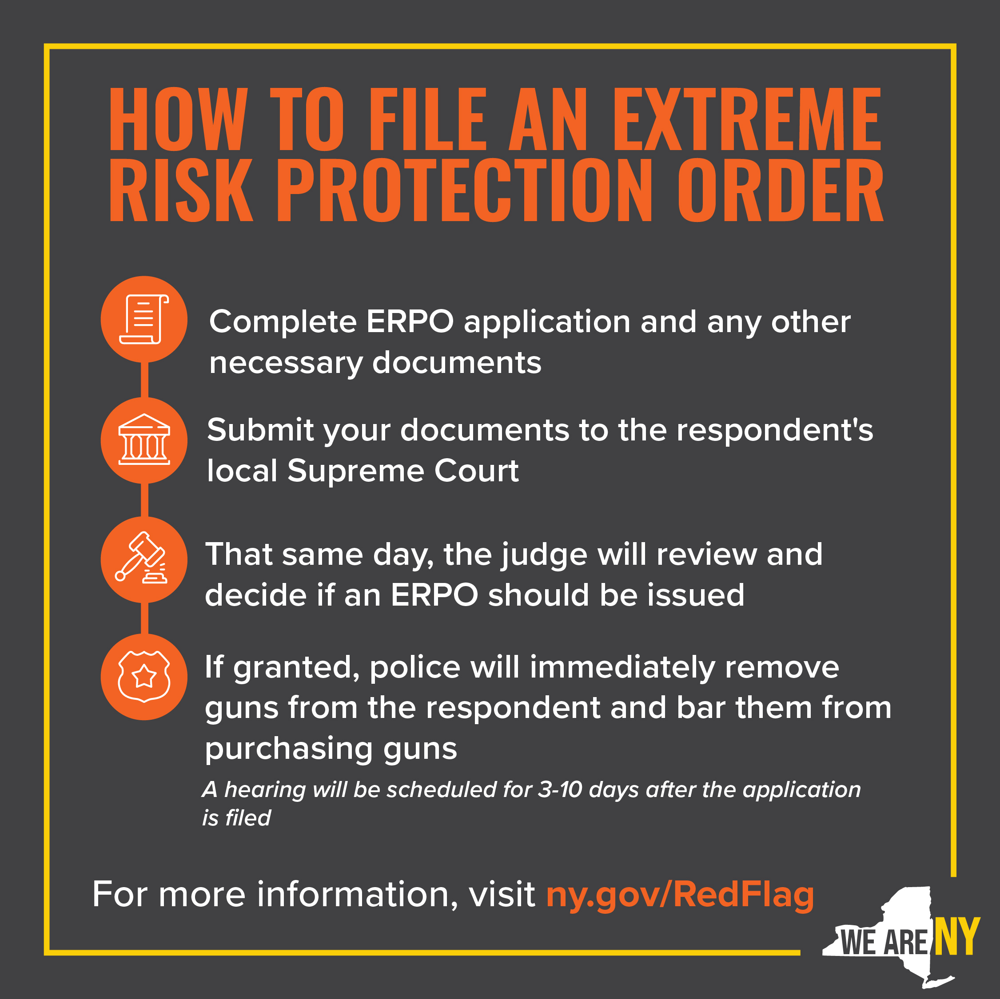

Option 1:
Option 2:
Red Flag Gun Protection Law
The Red Flag Law, also known as the Extreme Risk Protection Order law, prevents individuals who show signs of being a threat to themselves or others from purchasing or possessing any kind of firearm.
What you can do with individual who is a threat? You can file an Extreme Risk Protection Order (ERPO). which is a court order issued when a person may be dangerous to themselves or others. An ERPO prohibits a person from purchasing or possessing guns and requires the person to surrender any guns they already own or possess.
Sentencing for Criminal Possession of a Weapon in the Second Degree
Criminal Possession of a Weapon in the Second Degree is a class C violent felony. A conviction of the firearms charge carries a mandatory minimum prison sentence of 3.5 years and a maximum prison sentence of 15 years if a person does not have a prior felony conviction. In addition, there is an additional period of post-release supervision of between 2 ½ and 5 years.
Criminal Firearm Use in New York
A criminal firearm use charge, under P.L. 265.08 & 265.09, applies to individuals who utilize a weapon while carrying out a Class B or Class C felony, such as certain rape or burglary crimes. In order to convict a defendant of such a crime, the weapon must have been loaded and potentially able to inflict serious harm or even death. Criminal use charges can be classified to the first and second degree. A first-degree criminal use of a firearm charge can result in 25 years in prison, while a second-degree charge can result in a maximum of 15 years. These penalties can be in addition to the penalties sentenced for the underlying felony charges.
Criminal Firearm Possession in New York
A person who is charged with a Class E felony for possessing a firearm can face anywhere between 1 to 4 years in prison in addition to a fine of up to $5,000 under P.L. 265.01-B. Possessing a weapon in the third degree, such as carrying three or more weapons, is charged as a Class D felony, which can result in 2 to 7 years of jail time under PL 265.02. If a defendant is charged with a second-degree possession charge, then this is classified as a Class C felony, which can be charged for carrying a machine or automatic firearm; for example, then they can face 3.5 to 15 years of prison time under PL 265.03. A first-degree weapons possession charge is a Class B violent felony, which can result in time in prison ranging from 5 to 25 years.
Assault
Assault in the Second Degree is a “D” violent felony and is therefore punishable by time in state prison – a presumptive mandatory two years up to seven years or five years probation. Assault in the First Degree is a “B” violent felony with a sentence up to 25 years in prison and a minimum of five years in prison.
Video Guide for Olympics: Shooting
International Shooting Sport Federation